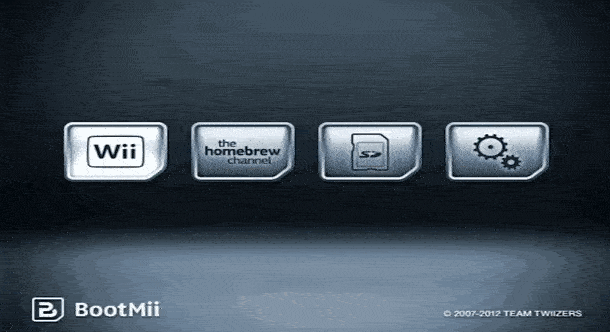

BootMii
- 启动Homebrew Channel
- 按主页(home)按钮选择Launch BootMii
- 按3次POWER按钮,1次RESET按钮进入设置 再按1次RESET按钮进入备份(绿色箭头)

- 提示Verify succeeded! 备份成功,按任意键退出 按3次POWER按钮,1次RESET按钮返回 再按1次RESET按钮回到Wii菜单
- 建议您将nand.bin和keys.bin备份到电脑
- 要恢复备份,请按3次POWER按钮,1次RESET按钮进入设置 再按1次POWER按钮,1次RESET按钮进入恢复(红色箭头)
感谢WiiBrew和Wii Guide!